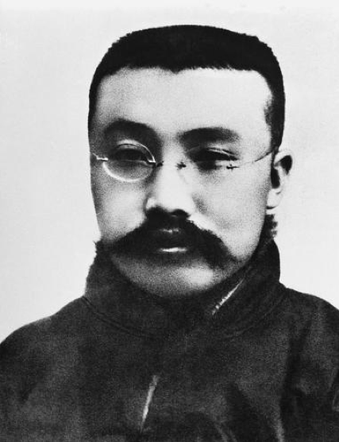
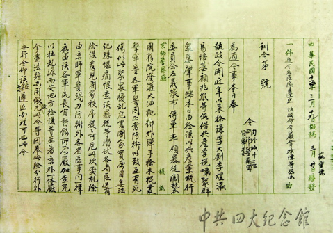
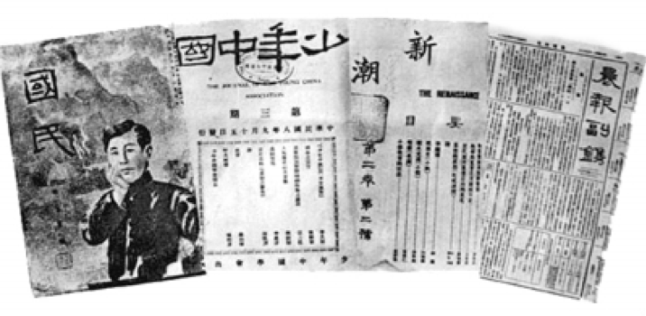

百年瞬间｜李大钊
1926年3月18日，北京5000多名学生和工人来到天安门前举行国民大会，抗议日本军舰侵入大沽口、炮轰国民军，声讨英美日等八国无理通牒中国的罪行。会后，大家结队前往段祺瑞执政府请愿，中共北方区委负责人李大钊走在游行队伍的最前面。作为中国共产党的主要创始人之一，李大钊不仅是思想文化界的杰出人物，更是一位勇敢的革命者和战士，凡有危险，他总冲锋在前。
电视剧《少帅》：
李大钊：同胞们起来吧！赴汤蹈火、共伸义愤。绝不承认亡国、亡族之私约，此身可杀、此念不可渝！
群众：打倒军阀，打倒列强，救中国！
任北大图书馆主任（馆长）时的李大钊
1917年，俄国十月革命胜利，28岁的李大钊以敏锐的眼光，认识到这场革命划时代的影响，在《新青年》杂志连续发表《庶民的胜利》《布尔什维主义的胜利》等宣传马克思主义的文章，并满怀信心地预言：“试看将来的环球，必是赤旗的世界。”1919年五四运动后，李大钊不仅出面帮助请愿学生脱离险境，同时更加致力于马克思主义的传播，在《新青年》上发表《我的马克思主义观》，为中国共产党的创建准备了思想条件。
电影《建党伟业》
李大钊：俄国革命之所以成功，就是因为布尔什维克政党团结了工人，农民，凡夫走卒，这些最广大的社会阶层。
陈独秀：你是说，要想团结国人，须先团结农工，要团结农工，须先有中国自己的布尔什维克？
李大钊：仲甫啊，到了上海就做这个打算。
陈独秀：好。
1921年，中国共产党成立，而“共产党”这个名称正是来自李大钊的坚持。此后，李大钊积极建立党的组织，掀起北方地区轰轰烈烈的革命运动。“三一八惨案”后，李大钊遭到反动军阀的多次通缉，但他从未退缩，直到生命的最后一刻。
逮捕李大钊的通缉令
李大钊之孙李亚中：1926年9月，中央就已经让他转移，但是我祖父，他想我是北京党组织的总的负责人，我要是走了，北京的工作交给谁呢？所以他没有走。他说，人类生活的目的就是发展自己的生命，可是也有为发展生命必须牺牲生命的时候，高尚的生活常在壮烈的牺牲之中，所以我们就觉得，他早就为牺牲做好了准备。
1927年4月6日，李大钊在北京东交民巷的苏联大使馆被捕，入狱后他受尽严刑拷打，始终坚贞不屈，大义凛然。4月28日临刑前，李大钊毫无惧色，第一个走上绞架，从容就义，牺牲时年仅38岁。
李大钊指导出版的几种刊物
李大钊一生追求革命真理，追求民族独立和人民解放，始终把个人生死置之度外。他生前曾撰写名联“铁肩担道义，妙手著文章”，而这也成为他革命一生的真实写照，正如他经常所说，高尚的生活，常在壮烈的牺牲中。